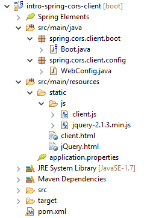
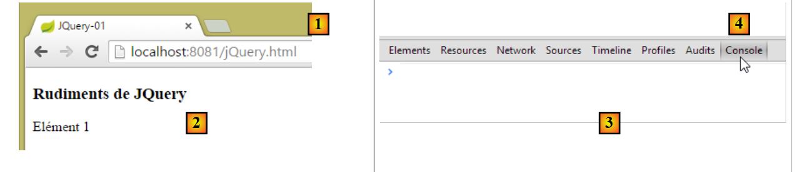
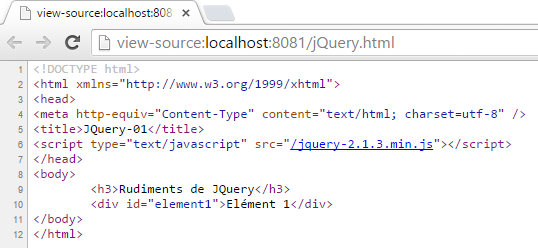
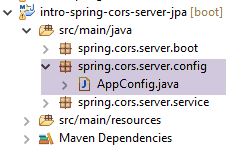
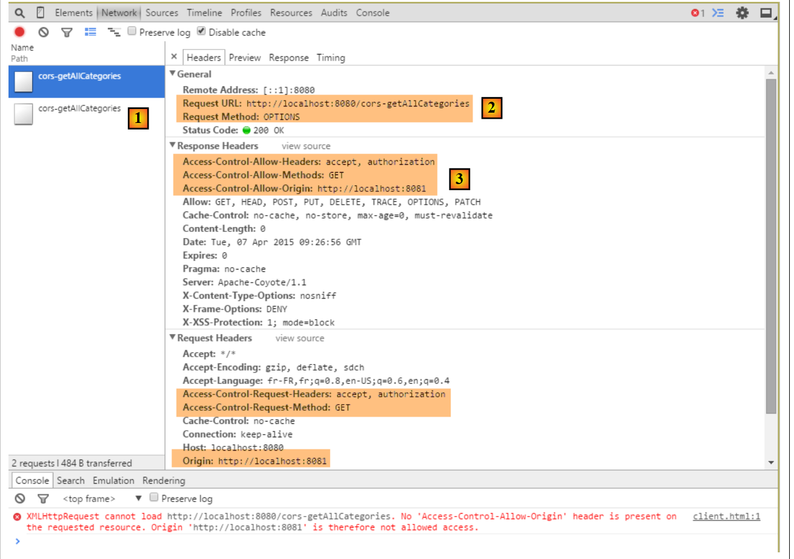
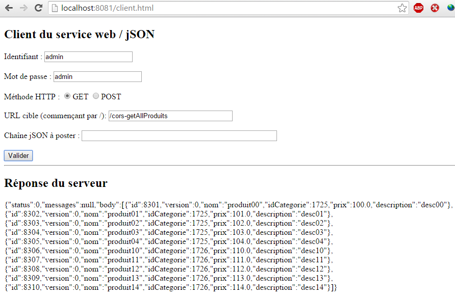
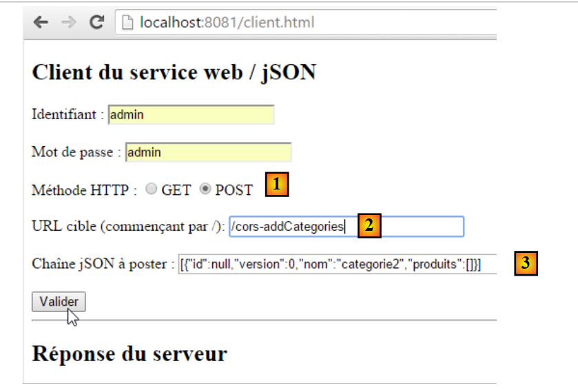

18. [Curso]: Partilha de Recursos entre Origens
Palavras-chave: CORS (Partilha de Recursos entre Origens).
Este capítulo está, de certa forma, fora do âmbito do tutorial. Foi incluído porque introduz a programação web e a programação em JavaScript. É importante lembrar que um dos objetivos deste tutorial é apresentar conceitos frequentemente utilizados no desenvolvimento JEE, ou seja, no desenvolvimento web baseado em frameworks Java. Aqui, ampliamos o servidor web utilizado no estudo da base de dados de produtos e categorias para permitir que ele aceite pedidos entre domínios.
No documento [Tutorial AngularJS / Spring 4], desenvolvemos uma aplicação cliente/servidor em que o cliente é uma aplicação AngularJS:
 |
- as páginas HTML/CSS/JS da aplicação Angular provêm do servidor [1];
- em [2], o serviço [dao] faz uma solicitação a outro servidor, o servidor [2]. Ora, isso é proibido pelo navegador que executa a aplicação Angular, pois constitui uma vulnerabilidade de segurança. A aplicação só pode consultar o servidor de onde provém, ou seja, o servidor [1];
Na verdade, não é correto dizer que o navegador impede a aplicação Angular de consultar o servidor [2]. Na realidade, consulta-o para perguntar se este permite que um cliente que não tenha origem nele o consulte. Esta técnica de partilha é chamada CORS (Cross-Origin Resource Sharing). O servidor [2] concede permissão enviando cabeçalhos HTTP específicos.
Iremos criar a seguinte arquitetura:
 |
- em [1], uma aplicação web fornece páginas HTML/JS;
- em [2], o navegador executa o JavaScript incorporado nas páginas HTML para consultar o serviço web seguro [3];
18.1. Suporte
 |
Os projetos para este capítulo podem ser encontrados na pasta [support / chap-18].
18.2. O projeto do cliente
Crie o seguinte projeto Eclipse:
 |
18.3. Configuração do Maven
O projeto é um projeto Maven com o seguinte ficheiro [pom.xml]:
<project xmlns="http://maven.apache.org/POM/4.0.0" xmlns:xsi="http://www.w3.org/2001/XMLSchema-instance"
xsi:schemaLocation="http://maven.apache.org/POM/4.0.0 http://maven.apache.org/xsd/maven-4.0.0.xsd">
<modelVersion>4.0.0</modelVersion>
<groupId>istia.st.webjson</groupId>
<artifactId>intro-server-webjson-01</artifactId>
<version>0.0.1-SNAPSHOT</version>
<name>intro-server-webjson-01</name>
<description>démo spring mvc</description>
<parent>
<groupId>org.springframework.boot</groupId>
<artifactId>spring-boot-starter-parent</artifactId>
<version>1.2.7.RELEASE</version>
</parent>
<dependencies>
<dependency>
<groupId>istia.st.springdata</groupId>
<artifactId>intro-spring-data-01</artifactId>
<version>0.0.1-SNAPSHOT</version>
</dependency>
<dependency>
<groupId>org.springframework.boot</groupId>
<artifactId>spring-boot-starter-web</artifactId>
</dependency>
</dependencies>
<build>
<plugins>
<plugin>
<groupId>org.springframework.boot</groupId>
<artifactId>spring-boot-maven-plugin</artifactId>
</plugin>
<plugin>
<groupId>org.apache.maven.plugins</groupId>
<artifactId>maven-surefire-plugin</artifactId>
<version>2.18.1</version>
</plugin>
</plugins>
</build>
</project>
- linhas 11–15: este é um projeto Spring Boot;
- linhas 23–26: usamos a dependência [spring-boot-starter-web], que inclui um servidor Tomcat e o Spring MVC;
18.4. Configuração do Spring
 |
A classe [WebConfig] que configura o projeto Spring é a seguinte:
package spring.cors.client.config;
import org.springframework.beans.factory.annotation.Autowired;
import org.springframework.boot.context.embedded.EmbeddedServletContainerFactory;
import org.springframework.boot.context.embedded.ServletRegistrationBean;
import org.springframework.boot.context.embedded.tomcat.TomcatEmbeddedServletContainerFactory;
import org.springframework.context.ApplicationContext;
import org.springframework.context.annotation.Bean;
import org.springframework.web.context.WebApplicationContext;
import org.springframework.web.servlet.DispatcherServlet;
import org.springframework.web.servlet.config.annotation.EnableWebMvc;
import org.springframework.web.servlet.config.annotation.ResourceHandlerRegistry;
import org.springframework.web.servlet.config.annotation.WebMvcConfigurerAdapter;
@EnableWebMvc
public class WebConfig extends WebMvcConfigurerAdapter {
// -------------------------------- layer configuration [web]
@Autowired
private ApplicationContext context;
@Bean
public DispatcherServlet dispatcherServlet() {
DispatcherServlet servlet = new DispatcherServlet((WebApplicationContext) context);
return servlet;
}
@Bean
public ServletRegistrationBean servletRegistrationBean(DispatcherServlet dispatcherServlet) {
return new ServletRegistrationBean(dispatcherServlet, "/*");
}
@Bean
public EmbeddedServletContainerFactory embeddedServletContainerFactory() {
return new TomcatEmbeddedServletContainerFactory("", 8081);
}
@Override
public void addResourceHandlers(ResourceHandlerRegistry registry) {
registry.addResourceHandler("/*.html").addResourceLocations("classpath:/static/");
registry.addResourceHandler("/*.js").addResourceLocations("classpath:/static/js/");
}
}
- linha 15: a classe configura um projeto Spring MVC;
- linha 16: a classe estende a classe [WebMvcConfigurerAdapter] para substituir alguns dos seus métodos;
- linhas 18–36: já nos deparámos com estes beans, por exemplo, na secção 13.5.3.1. Note-se, na linha 35, que o serviço web será executado na porta 8081;
- linhas 38–42: o método [addResourceHandlers] permite definir recursos estáticos, ou seja, recursos não tratados pelo [DispatcherServlet] na linha 23;
- linha 40: qualquer pedido de um recurso com a extensão .html irá devolver o ficheiro solicitado pelo pedido e encontrado na pasta [static] do classpath do projeto;
- linha 41: qualquer pedido de um recurso com a extensão .js irá devolver o ficheiro JavaScript solicitado pelo pedido e encontrado na pasta [static/js] do classpath do projeto;
 |
18.5. Noções básicas de jQuery e JavaScript
A página HTML do cliente será a seguinte:
 |
Incluirá código JavaScript (JS) que é executado no navegador. Abordaremos alguns conceitos básicos de JavaScript para nos ajudar a compreender o código. O cliente fará pedidos HTTP utilizando a biblioteca jQuery [https://jquery.com/], que fornece muitas funções que simplificam o desenvolvimento em JavaScript. Criamos um ficheiro HTML estático [jQuery.html] e colocamo-lo na pasta [static]:
 |
Este ficheiro terá o seguinte conteúdo:
<!DOCTYPE html>
<html xmlns="http://www.w3.org/1999/xhtml">
<head>
<meta http-equiv="Content-Type" content="text/html; charset=utf-8" />
<title>JQuery-01</title>
<script type="text/javascript" src="/jquery-2.1.3.min.js"></script>
</head>
<body>
<h3>Rudiments de JQuery</h3>
<div id="element1">Elément 1</div>
</body>
</html>
- linha 6: importação do jQuery;
- Linhas 10–12: um elemento da página com o ID [element1]. Vamos trabalhar com este elemento.
Precisamos de descarregar o ficheiro [jquery-2.1.3.min.js]. A versão mais recente do jQuery pode ser encontrada no URL [http://jquery.com/download/]:

Coloque o ficheiro descarregado na pasta [static/js] e atualize a linha 6 do ficheiro HTML para corresponder à versão instalada.
Depois de fazer isso, abra a visualização estática [jQuery.html] no Chrome [1-2]:
 |
No Google Chrome, prima [Ctrl-Shift-I] para abrir as ferramentas de programador [3]. O separador [Console] [4] permite-lhe executar código JavaScript. Abaixo, fornecemos comandos JavaScript para digitar e explicamos o que fazem.
|
: devolve a coleção de todos os elementos com o ID [element1], por isso, normalmente, uma coleção de 0 ou 1 elemento , uma vez que não é possível ter dois IDs idênticos numa página HTML. |  |
|
: define o texto [blabla] para todos os elementos da coleção. Isto altera o conteúdo exibido pela página |  |
|
oculta os elementos da coleção. O texto [blabla] já não é exibido. |  |
|
: exibe a coleção novamente. Isto permite-nos ver que o elemento com o ID [element1] tem o atributo CSS style='display: none;', o que faz com que o elemento fique oculto. | |
|
: exibe os elementos da coleção. O texto [blabla] aparece novamente. É o style='display: block;' que garante esta exibição. |  |
|
: define um atributo em todos os elementos da coleção. O atributo aqui é [style] e o seu valor [color: red]. O texto [blabla] fica vermelho. |  |
 | |
 |
Note que o URL do navegador não mudou durante todas estas operações. Não houve comunicação com o servidor web. Tudo acontece dentro do navegador. Agora, vamos ver o código-fonte da página:
 |  |
Este é o texto inicial. Não reflete as alterações que fizemos ao elemento nas linhas 10–12. É importante ter isto em conta ao depurar JavaScript. Por isso, muitas vezes não é necessário visualizar o código-fonte da página apresentada.
18.6. O código JavaScript da aplicação
Voltemos à página da aplicação cliente que irá consultar o serviço web / jSON:
 |
 |
O código HTML desta página é o seguinte:
<!DOCTYPE html>
<html>
<head>
<meta charset="UTF-8">
<title>Spring MVC</title>
<script type="text/javascript" src="/jquery-2.1.3.min.js"></script>
<script type="text/javascript" src="/client.js"></script>
</head>
<body>
<h2>Client du service web / jSON</h2>
<form id="formulaire">
<!-- identifier -->
Identifiant :
<!-- -->
<input type="text" id="identifiant" name="identifiant" value="" />
<!-- password -->
<br /> <br /> Mot de passe :
<!-- -->
<input type="text" id="password" name="password" value="" />
<!-- method HTTP -->
<br /> <br /> Méthode HTTP :
<!-- -->
<input type="radio" id="get" name="method" value="get"
checked="checked" />GET
<!-- -->
<input type="radio" id="post" name="method" value="post" />POST
<!-- URL -->
<br /> <br />URL cible (commençant par /): <input type="text"
id="url" size="30"><br />
<!-- posted value -->
<br /> Chaîne jSON à poster : <input type="text" id="posted"
size="50" />
<!-- validation button -->
<br /> <br /> <input type="button" value="Valider"
onclick="javascript:requestServer()"></input>
</form>
<hr />
<h2>Réponse du serveur</h2>
<div id="response"></div>
</body>
</html>
- linha 6: importamos a biblioteca jQuery;
- linha 7: importamos o código que iremos escrever;
- Linhas 15, 19, 26, 29, 31: Observe os identificadores [id] dos componentes da página. O JavaScript faz referência a estes componentes através destes identificadores;
O código [client.js] é o seguinte:
// global data
var url;
var posted;
var response;
var method;
var baseUrl = 'http://localhost:8080';
var identifiant;
var password;
var authorizationHeader;
function requestServer() {
// information retrieval
var urlValue = url.val();
var postedValue = posted.val();
var identifiantValue = identifiant.val();
var passwordValue = password.val();
var method = document.forms[0].elements['method'].value;
authorizationCode = btoa(identifiantValue + ':' + passwordValue);
// delete the previous answer
response.text("");
// make a manual Ajax call
if (method === "get") {
doGet(urlValue);
} else {
doPost(urlValue, postedValue);
}
}
function doGet(url) {
// make a manual Ajax call
$.ajax({
headers : {
'Authorization':'Basic '+authorizationCode
},
url : baseUrl + url,
type : 'GET',
dataType : 'text',
beforeSend : function() {
},
success : function(data) {
// text result
response.text(data);
},
complete : function() {
},
error : function(jqXHR) {
// system error
response.text(JSON.stringify(jqXHR.statusCode()));
}
})
}
function doPost(url, posted) {
// make a manual Ajax call
$.ajax({
headers : {
'Authorization':'Basic '+authorizationCode
},
url : baseUrl + url,
type : 'POST',
contentType : 'application/json; charset=UTF-8',
data : posted,
dataType : 'text',
beforeSend : function() {
},
success : function(data) {
// text result
response.text(data);
},
complete : function() {
},
error : function(jqXHR) {
// system error
response.text(JSON.stringify(jqXHR.statusCode()));
}
})
}
// document loading
$(document).ready(function() {
// retrieve page component references
identifiant = $("#identifiant");
password = $("#password");
url = $("#url");
posted = $("#posted");
response = $("#response");
});
- linhas 80–87: código JavaScript executado após o documento ter terminado de carregar no navegador;
- linhas 81-86: recupera as referências dos vários elementos no documento HTML através dos seus identificadores [id];
- linhas 2-9: variáveis globais acessíveis em todas as funções definidas no ficheiro JavaScript;
- linha 13: recupera o URL introduzido pelo utilizador;
- linha 14: recupera o valor que o utilizador pretende enviar (vazio se for uma operação GET);
- linha 15: recupera o nome de utilizador introduzido pelo utilizador;
- linha 16: recupera a sua palavra-passe;
- linha 17: recupera o método [get] ou [post] a utilizar ao solicitar a URL da linha 9:
- [document] refere-se ao documento carregado pelo navegador, conhecido como DOM (Document Object Model),
- [document.forms[0]] refere-se ao primeiro formulário no documento; um documento pode conter vários formulários. Aqui, existe apenas um,
- [document.forms[0].elements['method']] refere-se ao elemento do formulário com o atributo [name='method']. Existem dois:
<input type="radio" id="get" name="method" value="get" checked="checked" />GET
<input type="radio" id="post" name="method" value="post" />POST
- (continuação)
- [document.forms[0].elements['method'].value] é o valor que será enviado para o componente com o atributo [name='method']. Sabemos que o valor enviado é o valor do atributo [value] do botão de opção selecionado. Aqui, será, portanto, uma das cadeias de caracteres ['get', 'post'];
- linha 18: construímos a codificação Base74 da string `username:password`. Esta string codificada será utilizada no cabeçalho HTTP [Authorization] que enviaremos ao servidor para autenticar o pedido;
- linhas 22–26: dependendo do método HTTP a ser utilizado, executamos o método [doGet] ou [doPost];
- O método jQuery [$.ajax] efetua uma solicitação HTTP;
- linhas 32–34: comunicamos com um servidor que requer um cabeçalho HTTP [Authorization: Basic code];
- linha 35: o utilizador irá introduzir URLs do tipo [/cors-getAllCategories,/cors-addProduits, ...]. Estas URLs devem, portanto, ser complementadas com a URL do servidor da linha 6;
- linha 36: método HTTP a utilizar;
- linha 37: o servidor devolve JSON. Especificamos o tipo [text] como tipo de resultado para o apresentar exatamente como recebido;
- linha 42: exibir a resposta de texto do servidor;
- linhas 48-49: exibir qualquer mensagem de erro;
- linha 53: o método [doPost] recebe um segundo parâmetro, que é o valor a ser enviado;
- linha 61: para indicar que o valor enviado terá a forma de uma cadeia JSON;
18.7. Execução do cliente
A aplicação cliente é uma aplicação Spring Boot iniciada pela seguinte classe executável [Boot]:
 |
package spring.cors.client.boot;
import org.springframework.boot.SpringApplication;
import spring.cors.client.config.WebConfig;
public class Boot {
public static void main(String[] args) {
SpringApplication.run(WebConfig.class, args);
}
}
- Linha 10: O método [SpringApplication.run] utiliza o ficheiro de configuração [WebConfig]. A página [client.html] será implementada no servidor Tomcat presente no classpath do projeto;
18.8. A URL [/getAllCategories]
Iniciamos:
- o servidor web/JSON na porta 8080;
- o cliente para este servidor na porta 8081;
depois solicitamos a URL [http://localhost:8081/client.html] [1]:
 |
- em [2], efetuamos uma solicitação GET na URL [http://localhost:8080/getAllCategories];
Não recebemos uma resposta do servidor. Quando consultamos a consola de programadores do Chrome (Ctrl-Shift-I), vemos um erro:
 |
- em [1], estamos no separador [Rede];
- Em [2], vemos que o pedido HTTP efetuado não é [GET], mas sim [OPTIONS]. No caso de um pedido entre domínios, o navegador verifica junto do servidor se determinadas condições estão preenchidas, enviando um pedido HTTP [OPTIONS]. Neste caso, os pedidos são aqueles indicados pelos marcadores [5-6];
- em [5], o navegador pergunta se o URL de destino pode ser alcançado com um GET. O cabeçalho de solicitação [Access-Control-Request-Method] solicita uma resposta com um cabeçalho HTTP [Access-Control-Allow-Methods] indicando que o método solicitado é aceito;
- em [6], o navegador envia o cabeçalho HTTP [Origin: http://localhost:8081]. Este cabeçalho solicita uma resposta num cabeçalho HTTP [Access-Control-Allow-Origin] indicando que a origem especificada é aceite;
- Em [7], o navegador pergunta se os cabeçalhos HTTP [Accept] e [Authorization] são aceites. O cabeçalho de pedido [Access-Control-Request-Headers] espera uma resposta com um cabeçalho HTTP [Access-Control-Allow-Headers] indicando que os cabeçalhos solicitados são aceites;
- ocorre um erro em [3]. Clicar no ícone resulta no erro [4];
- em [4], a mensagem indica que o servidor não enviou o cabeçalho HTTP [Access-Control-Allow-Origin], que especifica se a origem da solicitação é aceita;
- Em [8], podemos ver que o servidor, de facto, não enviou este cabeçalho. Como resultado, o navegador recusou-se a efetuar a solicitação HTTP GET que foi inicialmente solicitada;
Precisamos de modificar o servidor web / JSON.
18.9. O novo serviço web / json
Criamos um novo projeto Maven [intro-spring-cors-server-jpa]:
 |  |
18.9.1. Configuração do Maven
A configuração do Maven para o novo serviço web é a seguinte:
<project xmlns="http://maven.apache.org/POM/4.0.0" xmlns:xsi="http://www.w3.org/2001/XMLSchema-instance"
xsi:schemaLocation="http://maven.apache.org/POM/4.0.0 http://maven.apache.org/xsd/maven-4.0.0.xsd">
<modelVersion>4.0.0</modelVersion>
<groupId>istia.st.cors</groupId>
<artifactId>spring-cors-server-jpa</artifactId>
<version>0.0.1-SNAPSHOT</version>
<name>spring-cors-server-jpa</name>
<description>démo spring cors</description>
<properties>
<project.build.sourceEncoding>UTF-8</project.build.sourceEncoding>
<java.version>1.8</java.version>
</properties>
<parent>
<groupId>org.springframework.boot</groupId>
<artifactId>spring-boot-starter-parent</artifactId>
<version>1.2.7.RELEASE</version>
</parent>
<dependencies>
<dependency>
<groupId>istia.st.spring.security</groupId>
<artifactId>intro-spring-security-server-01</artifactId>
<version>0.0.1-SNAPSHOT</version>
</dependency>
</dependencies>
<!-- plugins -->
<build>
<plugins>
<plugin>
<groupId>org.springframework.boot</groupId>
<artifactId>spring-boot-maven-plugin</artifactId>
</plugin>
<plugin>
<groupId>org.apache.maven.plugins</groupId>
<artifactId>maven-surefire-plugin</artifactId>
<version>2.18.1</version>
</plugin>
</plugins>
</build>
</project>
- Linhas 23–27: Recuperamos todos os dados do trabalho realizado até ao momento, acedendo ao arquivo /json do servidor web seguro;
18.9.2. Configuração Spring
A classe de configuração [AppConfig] é a seguinte:
 |
package spring.cors.server.config;
import org.springframework.context.annotation.Bean;
import org.springframework.context.annotation.ComponentScan;
import org.springframework.context.annotation.Configuration;
import org.springframework.context.annotation.Import;
import spring.security.config.SecurityConfig;
@Configuration
@ComponentScan(basePackages = { "spring.cors.server.service" })
@Import({ SecurityConfig.class })
public class AppConfig {
// cross-domain queries
@Bean
public boolean isCorsEnabled() {
return true;
}
}
- linha 10: a classe é uma classe de configuração do Spring;
- linha 11: outros componentes Spring podem ser encontrados no pacote [spring.cors.server.service];
- linhas 16–19: criamos um componente Spring chamado [isCorsEnabled] que indica se clientes fora do domínio do servidor são aceites ou não;
18.9.3. A classe [AbstractCorsController]
A classe [AbstractCorsController], que será a classe pai de todos os controladores nesta aplicação:
 |
O seu código é o seguinte:
package spring.cors.server.service;
import javax.servlet.http.HttpServletResponse;
import org.springframework.beans.factory.annotation.Autowired;
public abstract class AbstractCorsController {
@Autowired
private boolean isCorsEnabled;
// sending options to the customer
public void setHeaders(String origin, HttpServletResponse response) {
// Cors allowed ?
if (!isCorsEnabled || origin == null || !origin.startsWith("http://localhost")) {
return;
}
// set header CORS
response.addHeader("Access-Control-Allow-Origin", origin);
// certain headers are allowed
response.addHeader("Access-Control-Allow-Headers", "accept, authorization");
// we authorize GET
response.addHeader("Access-Control-Allow-Methods", "GET");
}
}
- linha 7: a classe [CorsController] é abstrata porque foi concebida para ser estendida, não instanciada;
- linhas 13–24: o método [setHeaders] adiciona os cabeçalhos HTTP exigidos pelas solicitações entre domínios à [HttpServletResponse response] (linha 13) enviada ao cliente;
- linha 33: o método [setHeaders] aceita como parâmetros:
- a string [origin] presente no cabeçalho HTTP [Origin] de pedidos entre domínios:
Aqui, o parâmetro [origin] na linha 13 teria o valor [http://localhost:8081]. Se a solicitação não contiver o cabeçalho HTTP [Origin], asseguraremos que [origin==null];
- (continuação)
- o objeto [HttpServletResponse response] que será devolvido ao cliente que efetuou a solicitação;
Estes dois parâmetros são injetados pelo Spring;
- linhas 15–175: se a aplicação estiver configurada para aceitar pedidos entre domínios, e se o remetente tiver enviado o cabeçalho HTTP [Origin], e se esta origem começar por [http://localhost], então o pedido entre domínios é aceite; caso contrário, é rejeitado;
- Linha 19: Se o cliente estiver no domínio [http://localhost:port], enviamos o cabeçalho HTTP:
Access-Control-Allow-Origin: http://localhost:port
o que significa que o servidor aceita a origem do cliente;
- linha 21: especificámos dois cabeçalhos HTTP específicos na solicitação HTTP [OPTIONS]:
Em resposta ao cabeçalho HTTP [Access-Control-Request-X], o servidor responde com um cabeçalho HTTP [Access-Control-Allow-X] especificando o que é permitido. As linhas 20–23 simplesmente repetem o pedido do cliente para indicar que este foi aceite;
18.9.4. O controlador [MyControllerWithHttpOptions]
Para evitar ter de modificar o servidor web/JSON não seguro [intro-server-webjson-01] discutido na Secção 13.5.3, iremos criar um novo controlador. Enquanto o servidor não seguro trata da URL [/url], o novo controlador tratará da URL [/cors-url], e esta URL aceitará pedidos de origem cruzada.
A classe [MyControllerWithHttpOptions] é o controlador que irá tratar de pedidos HTTP do tipo [OPTIONS]:
 |
package spring.cors.server.service;
import javax.servlet.http.HttpServletRequest;
import javax.servlet.http.HttpServletResponse;
import org.springframework.stereotype.Controller;
import org.springframework.web.bind.annotation.PathVariable;
import org.springframework.web.bind.annotation.RequestHeader;
import org.springframework.web.bind.annotation.RequestMapping;
import org.springframework.web.bind.annotation.RequestMethod;
import com.fasterxml.jackson.core.JsonProcessingException;
@Controller
public class MyControllerWithHttpOptions extends AbstractCorsController {
@RequestMapping(value = "/cors-getAllCategories", method = RequestMethod.OPTIONS)
public void getAllCategories(@RequestHeader(value = "Origin", required = false) String origin,
HttpServletResponse httpServletResponse){
// headers CORS
setHeaders(origin, httpServletResponse);
}
...
- linha 14: a classe é um controlador Spring MVC;
- linha 15: a classe [MyControllerWithHttpOptions] estende a classe [AbstractCorsController] que acabámos de descrever;
- linhas 17–18: o método [getAllCategories] (linha 18) trata da URL ["/cors-getAllCategories"] quando solicitada com o método HTTP [OPTIONS];
- linha 18: o método [getAllCategories] aceita dois parâmetros:
- [@RequestHeader(value = "Origin", required = false) String origin] para recuperar o valor do cabeçalho HTTP [Origin:http://localhost:8081] quando este estiver presente. Neste exemplo, o parâmetro [String origin] receberá o valor [http://localhost:8081]. Este cabeçalho não é obrigatório [required = false]. Quando não estiver presente, o parâmetro [String origin] terá o valor null;
- [HttpServletResponse httpServletResponse]: a resposta que será enviada ao cliente;
- linha 21: enviamos os cabeçalhos HTTP que permitem pedidos entre origens. O método [setHeaders] está definido na classe pai [AbstractCorsController];
Isto é feito para todos os URLs expostos pelo servidor web/JSON não seguro [intro-server-webjson-01] discutido na Secção 13.5.3. Quando este serviço expõe o URL [/url], a classe [MyControllerWithHttpOptions] acima expõe o URL [/cors-url].
18.9.5. O controlador [MyControllerWithCors]
 |
A classe [MyControllerWithCors] é o controlador que irá tratar dos pedidos HTTP [GET] e [POST]:
package spring.cors.server.service;
import javax.servlet.http.HttpServletRequest;
import javax.servlet.http.HttpServletResponse;
import org.springframework.beans.factory.annotation.Autowired;
import org.springframework.web.bind.annotation.PathVariable;
import org.springframework.web.bind.annotation.RequestHeader;
import org.springframework.web.bind.annotation.RequestMapping;
import org.springframework.web.bind.annotation.RequestMethod;
import org.springframework.web.bind.annotation.ResponseBody;
import com.fasterxml.jackson.core.JsonProcessingException;
import spring.webjson.service.MyController;
@Controller
public class MyControllerWithCors extends AbstractCorsController {
// spring dependencies
@Autowired
private MyController myController;
...
@RequestMapping(value = "/cors-getAllCategories", method = RequestMethod.GET, produces = "application/json; charset=UTF-8")
@ResponseBody
public String getAllCategories(@RequestHeader(value = "Origin", required = false) String origin,
HttpServletResponse httpServletResponse) throws JsonProcessingException {
// answer
return myController.getAllCategories();
}
...
- linha 17: a classe [MyControllerWithCors] é um controlador Spring MVC
- linha 18: estende a classe [AbstractCorsController];
- linhas 21–22: injeção do controlador [MyController] a partir do servidor web não seguro / JSON [intro-server-webjson-01] discutido na Secção 13.5.3;
- linhas 25–27: o método [getAllCategories] processa a URL [/cors-getAllCategories] (linha 28) quando solicitada utilizando o método HTTP [GET];
- linha 26: o resultado do método [getAllCategories] será enviado ao cliente. Este resultado é um fluxo JSON (o atributo [produces] na linha 27 e o tipo [String] do resultado na linha 25);
- linha 27: o método recebe os mesmos parâmetros que o método [getAllCategories] do controlador [MyControllerWithHttpOptions] que acabámos de examinar;
- linha 30: o método [myController.getAllCategories()] é chamado para enviar a resposta;
Em última análise, é o método [myController.getAllCategories()] do servidor não seguro que envia a resposta. Simplesmente enriquecemos a sua resposta com os cabeçalhos necessários para pedidos entre domínios.
Isto é feito para todos os URLs expostos pelo servidor web/JSON não seguro [intro-server-webjson-01] discutido na Secção 13.5.3. Quando este serviço expõe o URL [/url], a classe [MyControllerWithCors] acima expõe o URL [/cors-url].
Uma solicitação entre domínios será processada da seguinte forma:
- o código JavaScript do cliente solicita a URL [/cors-url] utilizando uma solicitação HTTP GET ou POST;
- o navegador que executa este código intercepta a solicitação e, primeiro, solicita a URL [/cors-url] usando uma solicitação HTTP OPTIONS para verificar se o serviço web de destino aceita solicitações entre domínios;
- um dos métodos no controlador [MyControllerWithHttpOptions] envia os cabeçalhos entre domínios esperados pelo navegador;
- o navegador solicita então a URL inicial [/cors-url] utilizando uma solicitação HTTP GET ou POST;
- um dos métodos no controlador [MyControllerWithCors] responde então;
18.9.6. Testes
A classe de inicialização para o projeto [intro-spring-cors-server-jpa] é a seguinte:
 |
package spring.cors.server.boot;
import org.springframework.boot.SpringApplication;
import spring.cors.server.config.AppConfig;
public class Boot {
public static void main(String[] args) {
SpringApplication.run(AppConfig.class, args);
}
}
- Linha 10: O método estático [SpringApplication.run] é executado com a configuração Spring [AppConfig]. Como resultado desta configuração, o servidor Tomcat incorporado nos arquivos do projeto é iniciado e a aplicação web [intro-spring-cors-server-jpa] é implementada nele. A aplicação web do servidor não seguro [intro-server-webjson-01], que faz parte dos arquivos do projeto, também é implementada nele. Uma vez que o projeto [intro-spring-security-server-01] também faz parte dos arquivos, dois tipos de URLs são, em última análise, expostos:
- as do serviço web seguro: /url;
- as do serviço web que aceita pedidos entre domínios: /cors-url;
Estamos agora prontos para mais testes. Lançamos a nova versão do serviço web e verificamos que o problema persiste. Nada mudou. Se adicionarmos uma instrução de saída de consola na linha 7 abaixo, esta nunca é apresentada, indicando que o método [getAllCategories] da classe [MyControllerWithHttpOptions] nunca é chamado;
@Controller
public class MyControllerWithHttpOptions extends AbstractCorsController {
@RequestMapping(value = "/cors-getAllCategories", method = RequestMethod.OPTIONS)
public void getAllCategories(@RequestHeader(value = "Origin", required = false) String origin,
HttpServletResponse httpServletResponse){
System.out.println(un_texte) ;
// headers CORS
setHeaders(origin, httpServletResponse);
}
Após alguma pesquisa, descobrimos que, por predefinição, o Spring MVC trata ele próprio os pedidos HTTP [OPTIONS]. Por conseguinte, é sempre o Spring que responde, e nunca o método [getAllCategories] na linha 5 acima. Este comportamento predefinido do Spring MVC pode ser alterado. Modificamos a classe [AppConfig] existente:
 |
package spring.cors.server.config;
import javax.annotation.PostConstruct;
import org.springframework.beans.factory.annotation.Autowired;
import org.springframework.context.annotation.Bean;
import org.springframework.context.annotation.ComponentScan;
import org.springframework.context.annotation.Configuration;
import org.springframework.context.annotation.Import;
import org.springframework.web.servlet.DispatcherServlet;
import spring.security.config.SecurityConfig;
@Configuration
@ComponentScan(basePackages = { "spring.cors.server.service" })
@Import({ SecurityConfig.class })
public class AppConfig {
// cross-domain queries
@Bean
public boolean isCorsEnabled() {
return true;
}
@Autowired
private DispatcherServlet dispatcherServlet;
@PostConstruct
public void init() {
// the application processes requests itself HTTP [OPTIONS]
dispatcherServlet.setDispatchOptionsRequest(true);
}
}
- linhas 25-26: injeção do bean [dispatcherServlet], que lida com os pedidos dos clientes. Este bean foi definido na configuração do servidor web/JSON não seguro [intro-server-webjson-01] discutido na secção 13.5.3;
- linhas 28-29: o método [init] (linha 29) será executado assim que a classe [AppConfig] for instanciada e as injeções Spring forem realizadas. Portanto, quando for executado, o campo na linha 26 já terá sido inicializado;
- linha 31: configuramos o bean [dispatcherServlet] para que permita que a aplicação web trate ela própria os pedidos HTTP [OPTIONS];
Executamos novamente os testes com esta nova configuração. Obtemos o seguinte resultado:
 |
- em [1], vemos que existem duas solicitações HTTP para o URL [http://localhost:8080/cors-getAllCategories];
- em [2], a solicitação [OPTIONS];
- em [3], os três cabeçalhos HTTP que acabámos de configurar na resposta do servidor;
Agora, vamos examinar a segunda solicitação:
 |
- em [1], a solicitação que está a ser analisada;
- em [2], trata-se da solicitação GET. Graças à primeira solicitação [OPTIONS], o navegador recebeu as informações que solicitou. Agora, está a executar a solicitação [GET] que foi inicialmente solicitada;
- em [3], a resposta do servidor;
- em [4], o servidor envia JSON;
- em [5], ocorreu um erro;
- em [6], a mensagem de erro;
É mais difícil explicar o que aconteceu aqui. A resposta do servidor [3] é normal [HTTP/1.1 200 OK]. Devemos, portanto, ter o documento solicitado. É possível que o servidor tenha de facto enviado o documento , mas que o navegador esteja a impedir a sua utilização porque exige que, também para o pedido GET, a resposta inclua o cabeçalho HTTP [Access-Control-Allow-Origin:http://localhost:8081].
Iremos então modificar o controlador [MyControllerWithCors] para que este também envie os cabeçalhos necessários para pedidos de origem cruzada:
@RequestMapping(value = "/cors-getAllCategories", method = RequestMethod.GET, produces = "application/json; charset=UTF-8")
@ResponseBody
public String getAllCategories(@RequestHeader(value = "Origin", required = false) String origin,
HttpServletResponse httpServletResponse) throws JsonProcessingException {
// headers CORS
setHeaders(origin, httpServletResponse);
// answer
return myController.getAllCategories();
}
- linha 6: os cabeçalhos necessários para pedidos entre domínios estão incluídos na resposta;
Após esta alteração, os resultados são os seguintes:
 |
Conseguimos obter a lista de categorias.
18.10. Os outros URLs [GET]
Nos controladores [MyControllerWithCors, MyControllerWithHttpOptions], o código das ações que tratam das URLs [GET] solicitadas segue o padrão das ações que anteriormente tratavam da URL [/cors-getAllCategories]. O leitor pode verificar o código nos exemplos fornecidos com este documento. Aqui está um exemplo para a URL [/cors-getAllProducts]:
em [MyControllerWithHttpOptions]
@RequestMapping(value = "/cors-getAllProduits", method = RequestMethod.OPTIONS)
public void getAllProduits(@RequestHeader(value = "Origin", required = false) String origin,
HttpServletResponse httpServletResponse) {
// headers CORS
setHeaders(origin, httpServletResponse);
}
em [MyControllerWithCors]
@RequestMapping(value = "/cors-getAllProduits", method = RequestMethod.GET, produces = "application/json; charset=UTF-8")
@ResponseBody
public String getAllProduits(@RequestHeader(value = "Origin", required = false) String origin,
HttpServletResponse httpServletResponse) throws JsonProcessingException {
// headers CORS
setHeaders(origin, httpServletResponse);
// answer
return myController.getAllProduits();
}
O resultado obtido é o seguinte:
 |
18.11. URLs [POST]
Vamos analisar o seguinte cenário:
 |
- Enviamos um POST [1] para a URL [2];
- em [3], o valor enviado. Trata-se de uma cadeia JSON;
- No geral, estamos a tentar criar uma categoria chamada [category2];
Não estamos a modificar nenhum código neste momento. O resultado obtido é o seguinte:
 |
- em [1], tal como nas solicitações [GET], o navegador efetua uma solicitação [OPTIONS];
- em [2], solicita autorização de acesso para uma solicitação [POST]. Anteriormente, era [GET];
- em [3], solicita autorização para enviar os cabeçalhos HTTP [accept, authorization, content-type]. Anteriormente, só tínhamos os dois primeiros cabeçalhos;
- em [4], o serviço web não concede todas as permissões solicitadas, o que causa o erro [5];
Modificamos o método [AbstractController.sendHeaders] da seguinte forma:
package spring.cors.server.service;
import javax.servlet.http.HttpServletResponse;
import org.springframework.beans.factory.annotation.Autowired;
public abstract class AbstractCorsController {
@Autowired
private boolean isCorsEnabled;
// sending options to the customer
public void setHeaders(String origin, HttpServletResponse response) {
// Cors allowed ?
if (!isCorsEnabled || origin == null || !origin.startsWith("http://localhost")) {
return;
}
// set header CORS
response.addHeader("Access-Control-Allow-Origin", origin);
// certain headers are allowed
response.addHeader("Access-Control-Allow-Headers", "accept, authorization, content-type");
// we authorize GET and POST
response.addHeader("Access-Control-Allow-Methods", "GET, POST");
}
}
- linha 21: adicionámos o cabeçalho HTTP [Content-Type] (não distingue maiúsculas de minúsculas);
- linha 23: adicionámos o método HTTP [POST];
Isto significa que os métodos [POST] são tratados da mesma forma que os pedidos [GET]. Aqui está um exemplo da URL [/cors-addArticles]:
em [MyControllerWithCors]
@RequestMapping(value = "/cors-addCategories", method = RequestMethod.POST, consumes = "application/json; charset=UTF-8", produces = "application/json; charset=UTF-8")
@ResponseBody
public String addCategories(HttpServletRequest request,
@RequestHeader(value = "Origin", required = false) String origin, HttpServletResponse httpServletResponse)
throws JsonProcessingException {
// headers CORS
setHeaders(origin, httpServletResponse);
// answer
return myController.addCategories(request);
}
em [MyControllerWithHttpOptions]
@RequestMapping(value = "/cors-addCategories", method = RequestMethod.OPTIONS)
public void addCategories(HttpServletRequest request,
@RequestHeader(value = "Origin", required = false) String origin, HttpServletResponse httpServletResponse)
throws JsonProcessingException {
// headers CORS
setHeaders(origin, httpServletResponse);
}
O resultado é o seguinte:
 |
A categoria [categorie2] foi adicionada com sucesso à base de dados. O SGBD atribuiu-lhe a chave primária 1729.
18.12. O [AuthenticateCorsController]
 |
O controlador [AuthenticateCorsController] existe para fornecer a URL [/cors-authenticate], que permite chamar a URL existente [/authenticate] com um pedido entre domínios. O seu código é o seguinte:
package spring.cors.server.service;
import javax.servlet.http.HttpServletResponse;
import org.springframework.beans.factory.annotation.Autowired;
import org.springframework.stereotype.Controller;
import org.springframework.web.bind.annotation.RequestHeader;
import org.springframework.web.bind.annotation.RequestMapping;
import org.springframework.web.bind.annotation.RequestMethod;
import org.springframework.web.bind.annotation.ResponseBody;
import com.fasterxml.jackson.core.JsonProcessingException;
import spring.security.service.AuthenticateController;
@Controller
public class AuthenticateCorsController extends AbstractCorsController {
@Autowired
private AuthenticateController authenticateController;
@RequestMapping(value = "/cors-authenticate", method = RequestMethod.GET)
@ResponseBody
public String authenticate(@RequestHeader(value = "Origin", required = false) String origin,
HttpServletResponse response) throws JsonProcessingException {
// headers CORS
setHeaders(origin, response);
// original method
return authenticateController.authenticate();
}
@RequestMapping(value = "/cors-authenticate", method = RequestMethod.OPTIONS)
public void corsAuthenticate(@RequestHeader(value = "Origin", required = false) String origin,
HttpServletResponse response) {
// headers CORS
setHeaders(origin, response);
}
}
Aqui estão dois exemplos:
 |
- As respostas são apresentadas utilizando o seguinte código JavaScript:
function doGet(url) {
// make a manual Ajax call
$.ajax({
headers : {
'Authorization':'Basic '+authorizationCode
},
url : baseUrl + url,
type : 'GET',
dataType : 'text',
beforeSend : function() {
},
success : function(data) {
// text result
response.text(data);
},
complete : function() {
},
error : function(jqXHR) {
// system error
response.text(JSON.stringify(jqXHR.statusCode()));
}
})
}
- A resposta [1] é apresentada na linha 14 da função [success];
- A resposta [2] é exibida pela linha 20 da função [error]. A função [JSON.stringify] cria a cadeia JSON do objeto [jqXHR.statusCode()], que é o objeto que encapsula o erro que ocorreu. Este objeto fornece pouca informação. É possível utilizar outros métodos do objeto [jqXHR] para obter, por exemplo, os cabeçalhos HTTP devolvidos pelo servidor;
18.13. Conclusão
A nossa aplicação suporta agora pedidos entre domínios. Estes podem ser ativados ou desativados através da configuração na classe [AppConfig]:
@ComponentScan(basePackages = { "spring.cors.server.service" })
@Import({ SecurityConfig.class })
public class AppConfig {
// cross-domain queries
@Bean
public boolean isCorsEnabled() {
return true;
}
@Autowired
private DispatcherServlet dispatcherServlet;
@PostConstruct
public void init() {
// the application processes requests itself HTTP [OPTIONS]
dispatcherServlet.setDispatchOptionsRequest(true);
}
}